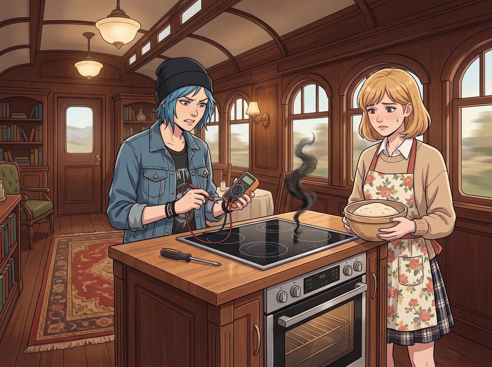
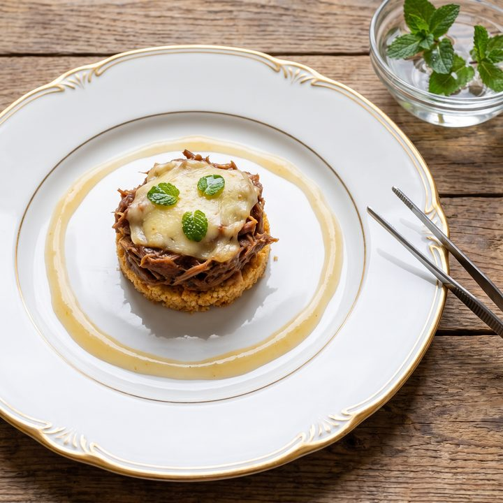

末日煉金術


二號車廂的中央島台上，那台價值八千美元、德國進口的嵌入式智能電磁烤箱一體機，發出了最後一聲悲鳴，冒出了一縷象徵著死亡的黑煙。
Chloe 拿著萬用電表，煩躁地將一頭藍髮抓成了雞窩。
「主控板的晶片燒了。」她將螺絲起子扔在檯面上，發出絕望的當啷聲，「如果是在平時，我去汽配城或者廢品站，說不定能拆個平替零件。但現在？全球供應鏈斷裂，長灘港外停了八十艘進不來的貨輪。我們就算有錢，這塊德國晶片也得等六個月才能運到這片山卡拉。」
Kate 穿著圍裙，手裡端著一盆剛發酵好的酸種麵團，無助地站在一旁。「那……我們的熱食怎麼辦？沒有爐子，連水都燒不開了。」
坐在沙發上敷著面膜的 Victoria 冷笑了一聲：「這就是遠離塵囂的代價。沒有外送，沒有私人廚師，現在連個破爐子都修不好。」
一、三級熱量配給
「根據營地災備預案，當常規熱源失效且物流阻斷時，我們將自動進入三級熱量配給狀態。」Lily 從她那堆發光的螢幕後抬起頭，「在新的烹飪設備送達前，全體人員的碳水化合物和蛋白質攝入，將由戰略熱量儲備全面接管。」
聽到這句話，Chloe 渾身劇烈地顫抖了一下，彷彿某種深層的創傷被觸發了。
十分鐘後，露營桌上堆滿了印著粗體黑字的軍綠色塑膠袋。Victoria 用兩根塗著法式美甲的手指，嫌棄地夾起一包名為蔬菜麵條佐肉醬的口糧。
「這包裝看起來像我祖父用來裝高爾夫球桿的防潮袋。」Victoria 厭惡地將它扔回桌上，「讓我吃這種給大兵當飼料的工業廢料？我寧願餓死。」
「妳撐不過四十八小時的，大小姐。妳昨晚還偷吃了我最後半包洋芋片。」Chloe 無情地戳穿了她，然後絕望地看向 Kate，「天使，救救我們。妳能把這些東西變出點人味嗎？」
二、末日煉金實驗室
Kate 看著桌上那一堆化學加熱袋、防腐劑餅乾和顏色詭異的肉醬，眉頭緊緊皺起。作為一個熱愛烘焙、堅信食物必須帶有靈魂和溫度的人，這些工業極致壓縮的產物對她來說，簡直是對烹飪的褻瀆。
但當她看到餓得肚子咕咕叫、卻死活不肯撕開包裝的同伴時，Kate 深吸了一口氣，將圍裙的帶子重新繫緊。
「把它們全部拆開。把所有的粉末、醬包和主食分類。」Kate 的眼神中閃爍著一種前所未有的、屬於家庭主婦的狂熱戰鬥力，「我們不能向防腐劑低頭。」
接下來的一個小時，二號車廂變成了一個瘋狂的末日煉金實驗室。
因為沒有火和電磁爐，Kate 展現出了驚人的物理學直覺。她讓 Chloe 將十幾個口糧包裡的無焰加熱袋全部拆出來，平鋪在一個不鏽鋼大烤盤的底部，倒水觸發化學反應。烤盤瞬間達到了沸水的溫度。
接著，Kate 在烤盤上架起了一個玻璃盆，做成了一個完美的無電隔水加熱系統。
「Max，幫我把那些硬得像磚頭的梳打餅乾全部碾碎！」Kate 有條不紊地指揮著。她將餅乾碎混合了口糧裡的花生醬，在另一個盤子裡壓實，做成了一個免烤的派皮底座。
「Chloe，把那些辣味通心粉、燉牛肉和所有的墨西哥辣椒起司醬擠進玻璃盆裡！」Kate 用木勺在隔水加熱的盆裡瘋狂攪拌，利用化學加熱袋的高溫，將那些原本吃起來像橡膠的肉塊和黏稠的起司重新融合，加入了一點她私藏的黑胡椒和海鹽，硬生生把一堆防腐劑熬成了一鍋香氣四溢的美式起司肉醬焗糊。
最後，她甚至用口糧裡的檸檬飲料粉加上一小包蘋果醬，調出了一種酸甜解膩的澆汁。
三、化腐朽為神奇
當這頓二次加工的晚餐端上桌時，所有人都震驚了。
Victoria 憑藉著她敏銳的藝術嗅覺，主動承擔了擺盤工作。她用一套骨瓷餐盤，將起司肉醬精緻地堆疊在餅乾碎底座上，邊緣淋上一圈檸檬蘋果醬，最後甚至用鑷子放上了幾片從外面雨中採來的、洗乾淨的野生薄荷葉。
「如果我不說這是用七包防腐期長達十年的軍用口糧做的……」Max 舉起相機，對著這盤看起來像米其林三星的料理按下了快門，「這賣相絕對能上時尚雜誌的副刊。」
Chloe 嚥了一口唾沫，小心翼翼地切了一塊放進嘴裡。起司的濃郁在加熱後得到了釋放，餅乾碎的酥脆中和了肉塊的泥濘感，而檸檬醬的酸甜完美掩蓋了那股揮之不去的化學藥水味。
「好吃……」Chloe 差點哭了出來，「Kate，妳不是天使，妳是上帝本人。」
就連 Victoria 也屈尊降貴地吃了大半盤，雖然她一邊吃一邊在嘟囔：「這是我這輩子吃過最底層的碳水，我的健身教練會殺了我的……再給我來一點那種辣醬。」
四、因公損毀
當四個人終於在荒野的風雨中，靠著這頓化腐朽為神奇的軍糧吃飽喝足時，她們突然發現，Lily 一直沒有上桌。
「實習生，妳不餓嗎？」Chloe 叼著牙籤，心情大好。
Lily 坐在工作站前，手裡拿著一根拆開的高密度能量棒，像個沒有感情的機器人一樣，一口一口地乾啃著這種硬得能砸碎玻璃的塊狀物。
「我已經攝取了維持基礎代謝所需的熱量。」Lily 平靜地喝了一口冷水。
「妳就啃那個？妳明明可以跟我們一起吃 Kate 做的起司肉醬啊。」Max 不解地問。
「因為我需要保持極度的理智，來處理我們因災損毀的基礎設施。」Lily 轉過身，螢幕上是一份剛剛發送成功的、密密麻麻的電子表單。
她推了推圓框眼鏡，嘴角勾起一抹熟悉的、令人毛骨悚然的乖巧微笑：「我剛才提交了一份事故報告。我聲明，由於安裝的那排太陽能板產生了罕見的電磁脈衝逆流，導致我們營地唯一的高階熱源設備發生了災難性故障。」
Chloe 愣住了：「等一下，這破爐子明明是自己老化的……」
「在報表裡，沒有自然老化，只有因公損毀。」Lily 溫柔地打斷了她，「為了確保合作項目不因後勤崩潰而中斷，審批系統在一分鐘前自動通過了我的緊急補償申請。」
Lily 關掉報表，雙手交疊在膝蓋上，看著目瞪口呆的四人：「明天早上，會有一套模組化野戰廚房空投到我們的營地。它自帶柴油發電機、多個高壓爐頭、對流烤箱，以及足以供應一個連隊的冷鏈冰櫃。作為補償，裡面還會塞滿了新鮮的肋眼牛排、阿拉斯加鮭魚和有機蔬菜。」
車廂裡陷入了死一般的寂靜。只有窗外狂風暴雨的聲音。
Kate 看了看手裡用化學袋加熱出來的口糧肉醬，又看了看 Lily。「所以……我們明天就能吃牛排了？」
「是的，Kate 學姐。」Lily 點了點頭，「您的廚藝魔法拯救了我們今晚的胃，而行政黑魔法，將拯救我們未來的餐桌。這就是二號車廂的雙重防禦機制。」
Chloe 默默地放下牙籤，走到 Lily 身邊，伸手拿過那半根難吃到令人髮指的能量棒，狠狠咬了一口。
「實習生，」Chloe 嚼著那塊硬如石頭的糖塊，眼眶裡閃爍著對資本與權力白嫖的極度感動，「如果有一天妳決定競選總統，我一定第一個去給妳投票。妳這個可怕的魔鬼。」